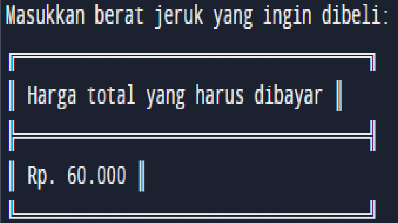
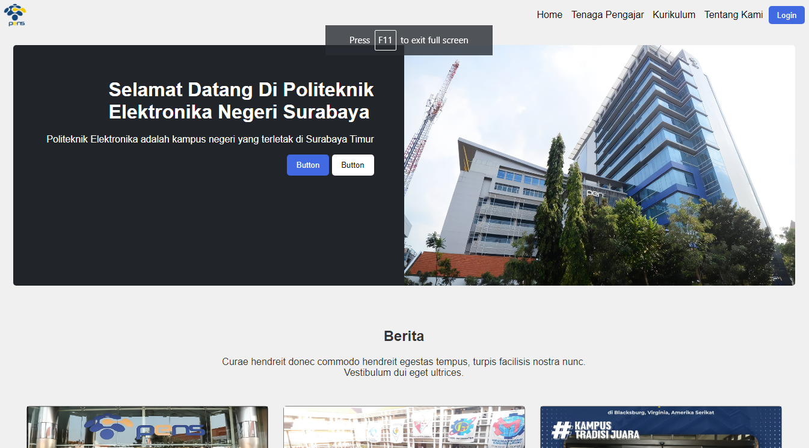

Kehidupan Pribadi
Saya adalah seorang mahasiswa Teknik Informatika yang lulus dengan predikat cumlaude dari D3 Teknik Informatika Politeknik Elektronika Negeri Surabaya. Di bidang tersebut, saya memiliki passion dan skill di bidang pengembangan aplikasi, data science, dan web development. Saya juga memiliki keterampilan komunikasi, kerjasama, serta adaptasi yang baik dalam bekerja di berbagai tim dan proyek informatika.
Karakteristik
Saya adalah seorang web developer yang berfokus pada fullstack development, yaitu pengembangan web yang meliputi front-end dan back-end. Saya menguasai berbagai bahasa pemrograman dan teknologi web, seperti HTML, CSS, JavaScript, PHP, Docker, dan lainnya. Saya telah mengerjakan beberapa proyek web dari berbagai bidang. Saya memiliki keterampilan pemrograman, desain, dan debugging yang baik, serta mampu bekerja secara mandiri maupun dengan tim. Saya selalu berusaha belajar hal-hal baru dan mengikuti perkembangan terbaru di dunia web development.
SEKOLAH MENENGAH PERTAMA
Saya adalah lulusan SMP Negeri 2 Kota Sumenep (2016-2019) di Kota Sumenep, Jawa Timur. Saya memiliki nilai rata-rata UN 310,38. Saya aktif dalam kegiatan sekolah seperti Osis, Pramuka, dan Band.
SEKOLAH MENENGAH AKHIR
Saya adalah lulusan SMA Negeri 1 Kota Sumenep (2019-2022) di Kota Sumenep, Jawa Timur. Saya mengambil jurusan IPS dan mempelajari mata pelajaran seperti ekonomi, sejarah, dan geografi. Saya memiliki nilai rata-rata UN 90,78. Saya juga mengikuti kegiatan ekstrakurikuler seperti pramuka, robotika, dan pemrograman.
DIPLOMA 3
riwayat pendidikan pendidikan Saya adalah mahasiswa Politeknik Elektronika Negeri Surabaya (2023-Sekarang) di Sumenep, Jawa Timur. Saya mengambil jurusan Ilmu Komputer dan memiliki IPK 3,75 (sampai semester 6). Saya tertarik dengan bidang pemrograman web dan mobile dan telah membuat beberapa proyek aplikasi berbasis web sendiri. Saya juga aktif dalam organisasi himpunana kemahasiswaan dan menjadi anggota divisi humas.
Bahasa Program yang saya kuasai
keahlian yang bersangutan dengan programing
- ↪ Mampu mengoprasikan dan ahli Git dan Github
- ↪ Mampu menggunakan alat-alat bantu yang berguna untuk pengembangan web
- ↪ Memahami konsep-konsep dasar pemrograman yang penting dan sering digunakan
- ↪ Menguasai framework atau library yang populer dan sesuai dengan bahasa pemrograman
- ↪ Mampu mengdesain website menggunakan WordPress
- ↪ Mampu mengimplementasikan konsep keamanan web
- ↪ Mampu mengoptimalkan kinerja web
- ↪ Mampu beradaptasi dengan teknologi web yang terus berkembang
PT Haidar jeruk, Madura City
juni 2023 - sekarang
- ↪ Membuat Program Penghitung jeruk
- ↪ Membuat Website Penjualan Jeruk
- ↪ Mengoptimalkan konten dengan teknik SEO dan keyword research
- ↪ Memonitor performa konten dengan Google Analytics dan membuat laporan bulanan

Penghitung Harga jeruk
Ini adalah program pertama yang saya buat menggunakan C. Program tersebut dapat menghitung total harga jeruk per kg berdasarkan jumlah jeruk yang dibeli dan harga satuan jeruk.

website Berita Pens (Fiktif)
Ini adalah wujud web yang berita PENS (fikrif). Web tersebut saya buat menggunakan HTML dan CSS saja. Web ini menampilkan berbagai informasi terkini tentang Politeknik Elektronika Negeri Surabaya (PENS), seperti berita, agenda, pengumuman, dan profil. Web ini juga memiliki tampilan yang menarik dan responsif dengan menggunakan CSS.